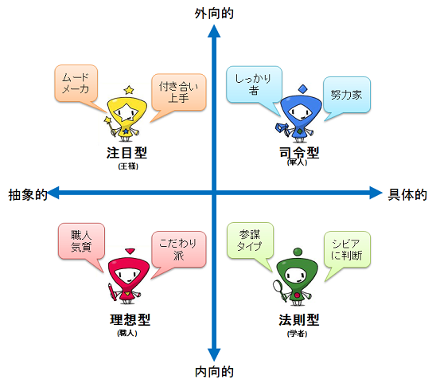
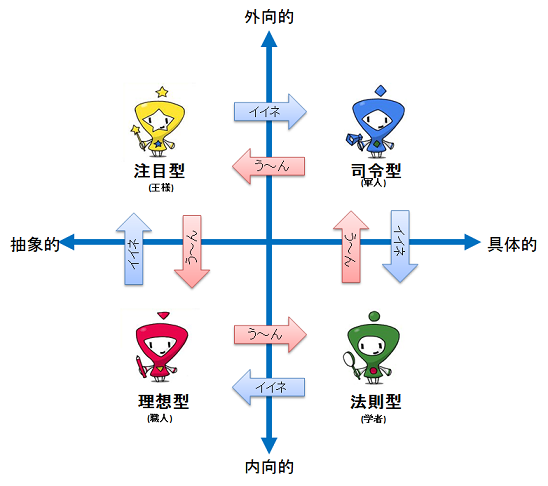
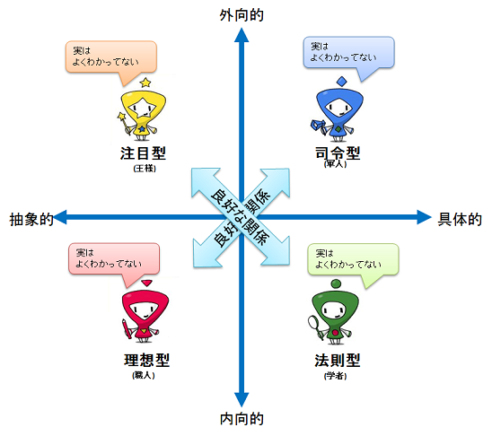

4タイプとは、大阪芸術大学客員教授岡田斗司夫氏により提唱された人間の欲求特性を定量的に分類する手法です。 人間の欲求特性、社会生物としての人間の本能を44問からなる比較的単純なテストをもちいて、 2つの特性（外向性・内向性、抽象的・具体的）を定量評価し、2次元グラフ化して表現します。
4タイプ判定テストは、 どのタイプかを判定するために使用するツールです。

縦軸上側は「外向的」価値観で、その欲望は他者的です。つまり他の人と比べて自分はどうかを重視する傾向を 示しています。 縦軸下側は「内向的」価値観・自己的。他人と比べてより、自分の中での納得感など、内向きに考える傾向を示します。 外向的・内向的とは、価値観の基準や、思考の方向性のことです。外向的であるから性格が派手で社交的とか、 内向的であるから内気で引っ込み思案であるなどの関係性を示すものではありません。 横軸右側の「具体的」とは、数値化できたり、明らかにはっきりとした答えがあったりすること、 左側の「抽象的」とは、数値化できない定性的な価値観をもつことです。
テスト結果をグラフ上にプロットし、配置された象限から「注目型」、「司令型」、「法則型」、「理想型」という4種類の 欲求傾向に分類します。
注意
2000年4月に出版された岡田斗司夫著の書籍『人生テスト～人を動かす４つの力』では注目型を王様、 司令型を軍人、法則型を学者、理想型を職人という名称で記述していますが、 本サイトでは2011年2月出版の書籍『人生の法則 「欲求の４タイプ」で分かるあなたと他人』にもとづき記述しています。
注目型の人は、情熱、すなわち自分の熱意が何より大事なタイプ。人から注目されたい、認められたい、 頼られたいという欲求が基本的に強い人が分類されます。このため目立ちたがりの甘えん坊、 人情もろくておせっかいな人が多いです。
無視やないがしろにされる事を最も苦痛と感じるため、自分がのけ者となることや、 かげ口を言われると腹をたててしまいます。 ムードメーカで、そこにいるだけで、場が華やぐ人が多いのもこのタイプの傾向です。面倒見がよく、 つきあい上手ですが、身近に不機嫌な人がいると、落ち着きません。 会話が途切れないように気を使うことが多く、パーティなどでも参加者が楽しめているかついつい気になってしまいます。
また、認められたいと思うあまり、成功の可能性の低い依頼を断り切れずに引き受けて、評価を下げることも多いです。
注目型の有名人：明石家さんま、マイケル・ジャクソン
より詳しく知りたい方は、こちらを参照下さい。
司令型の基本的な欲求は、勝負にこだわる点です。 努力家で、常識人のしっかり者。だからこそ上司部下や目上、目下などの上下関係に敏感で礼儀正しく、 部下や後輩が生意気だと腹をたててしまいます。
能力の差はもちろんのこと、社会的地位や序列を一番気にします。 仕事だけでなく、恋愛も家庭もすべてが対決の場と考えてしまいます。 その勝敗の判定ルールも、はっきりと合理的で理性的です。 他人への好き嫌いを表に出さず、誰とでもつきあいができます。 そのうえ向上心あふれ、よく働く努力家になるので、有能な人が多いのが司令型の特徴です。
また、「冷たく気が許せない」という評価がある人も多く、孤独に耐える強さや自分に対する厳しさも備えています。
司令型の有名人：勝間和代
より詳しく知りたい方は、こちらを参照下さい。
物事のしくみ・法則を自分なりに理解したり、発見したり、推測したり、仮説を立てたりすることに喜びを感じるタイプです。
自主性が強く、何をするにも理由が分からない場合苦痛を感じてしまいます。 成功しても、なぜ成功したのかわからない場合は、落ち着かなくなります。 逆に失敗しても、失敗の原因がわかれば結果に嘆いたりしません。 常に一歩引いているニヒリスト。 本当のことだからと、言わないほうがいいことも、つい口にして嫌われることもありますが、 現実をシビアに判断できる参謀タイプとして活躍する人です。
行動パターンが決まっている傾向が散見され、いつも行く店が決まっている場合が多いです。 せっかく計画したことが他人のわがままで無駄になったときに腹をたてますが、感情的になっても立ち直りが早いです。
法則型の有名人：池上彰
より詳しく知りたい方は、こちらを参照下さい。
理想型は自分の考えている通りに物事をやり遂げることにこだわる。 つまり、結果よりプロセス、目的より手段を重要視するタイプです。 客観的な成功や完成ではなく、他人の目から見ても分からない、確固たる基準や理想像が自分の中にあって、 それに近づくことが喜びとなります。
逆にいくら努力しても理想像に近づけないことが悲しみや怒りになります。 正義感が強く、頑固なこだわり派が多く、人間としてちゃんとしていたい、立派でありたいという欲求が強いです。 お金や権力に惑わされない、自由で自分らしい生き方を好む人が多いので、 客に媚びない職人や本物の芸術家はこのタイプです。
また、頑固過ぎて世間から浮いてしまうこともあります。個人的なこだわりが強い分、 自分の理解者を一生かかっても捜し求めることとなるでしょう。
理想型の有名人：松本人志
より詳しく知りたい方は、こちらを参照下さい。
4タイプ判定テストで明確にタイプが決定しなかった方
4タイプ判定テストは、おおまかにタイプ分類を判定するツールです。 このため、一部の方は明確にタイプをお伝えできない場合があります。 時間をあけて再度試していただくと結果が 出ることがあります。 その際は、5段階の回答のめりはりを大きめにつけていただくと 判別できることがあります。
2つのタイプの中間と判別された方は、上記の該当タイプの説明を読んでいただき、どちらが自分に近いかを ご判断下さい。 後述の優位劣位の法則にもありますが、優位のタイプの行動を模倣しようとする場合もありますので、 第三者にどちらのタイプかを判断いただくことをおすすめします。
特に4タイプグラフでの座標が原点の方は、対象の方をよくご存知である方に聞いていただくことをおすすめします。
各タイプ間とのコミュニケーションに関する2つの法則があります。 「4タイプ判定テストがなぜ座標で表現するのか？」はこの2つの法則のためでもあります。
グラフ内の位置で右回りに当たるタイプが優位、左回りのタイプが劣位にあたります。 優位位置のタイプに対しては憧憬を、劣位位置のタイプに対しては軽視する傾向があります。

このため劣位位置のタイプに対してのコミュニケーションに問題が発生することが多いです。
注目型にとっては司令型が優位のタイプです。
今出来ることと、出来ないことを即決で判断し、確実な成果をあげていく司令型は、交渉においても、 正面から堂々と自信を持って他人に接する姿に、自分にはないものを感じる傾向にあります。
それに対して注目型は、相手の不快な様子を直視できないため、不利な契約を結び、 大きなリスクを自ら抱え込むことがあります。 そのような自分と司令型の人間を比較して落ち込むことや、憧れを持つ傾向がります。
注目型にとって理想型は、せっかくメンバに認められる機会があっても、 個人的なこだわりでみすみす見逃してしまう人に見えています。 それは注目型が人とのつながりや交わりを大切にし、 人からどれくらい信頼されているかを重要視するからです。
理想型に対しては、相手の価値観を尊重しつつ、 ほかのメンバとの接点の重要性を認識させる方向で対話をおこなうとよいでしょう。
司令型にとって、法則型が優位のタイプで、 常に冷静で合理的な判断をしている法則型のようになりたいと思う傾向があります。
成功している法則型が築いた地位や権力は社会観察の結果、世の中の仕組みを見抜いて 獲得したものであるように考えてしまいます。
司令型にとって注目型は劣位のタイプである。お世辞に弱く、 頼られるとつい安請け合いばかりするタイプであると評価してしまいます。
注目型に対しての重要な指示は、信頼の上での依頼である点を強調することがポイントです。
信念を持ち情熱と共に行動していく理想型は法則型にとって優位のタイプとなります。 理想型の感性による成功が、より深い洞察力や広い視野、人生観によるものだと思えるからです。
自分のやりたいことや、こだわりについて熱く語っている理想型を見ると、話に聞き入ってしまいます。 これは理屈っぽいとか人間的な感情に乏しいというコンプレックスを持っているからです。
逆に、法則型にとって司令型は、目先の損得、勝ち負けに惑わされて、真実を見失っていると評価してしまいます。 なぜなら、勝ち負けや社会的権威などは相対的なものとして重要視していない法則型にしてみると、 それに振り回されている司令型が理解できないためです。
司令型に対しては、重要な指示を行う場合は、仕事全体としてどういう価値があるのかを明確にすることを忘れないでください。
自分の信念にこだわるあまりに理解者が少ない、そんな理想型にとって、成功している注目型は憧れの存在となります。
理想像に近づけない自分の無力感と向き合いながら、こつこつ努力するしか世に出る方法を思いつかない理想型からすると、 大勢の人から慕われ頼られている注目型の存在が眩しく感じる傾向があります。
逆に、理想型にとって法則型は、自分の心で感じずに、理屈で武装された指摘を行うだけの人として評価してしまうため、 あるべき理想の姿を目指して頑張る理想型にとってはそういう法則型が理解できません。
コミュニケーションを行う際には、俯瞰的な評価を求め、改善するために必要な要件として指示を与えることで、 目的を共有化させてください。
グラフの中で対角線位置にあるタイプ（注目型と法則型、司令型と理想型）は、欲求の価値観が重ならないため、 長期的に良好な関係を持つことができます。

ただし、あくまで相手の価値が理解できないためで、必ずしも相手を理解している訳ではないことに注意して下さい。
このため、対角線位置にあるタイプとのコミュニケーションは、中間位置に当たるタイプのメンバと一緒に行い、 相手型の考え方に対する解説者を加えることで円滑に進めるとよいでしょう。
さらに詳しく知りたい方は、以下の記事を参照下さい。
各タイプの説明は、こちらをご参照ください。
[注目型]
[司令型]
[法則型]
[理想型]
[判定不能]